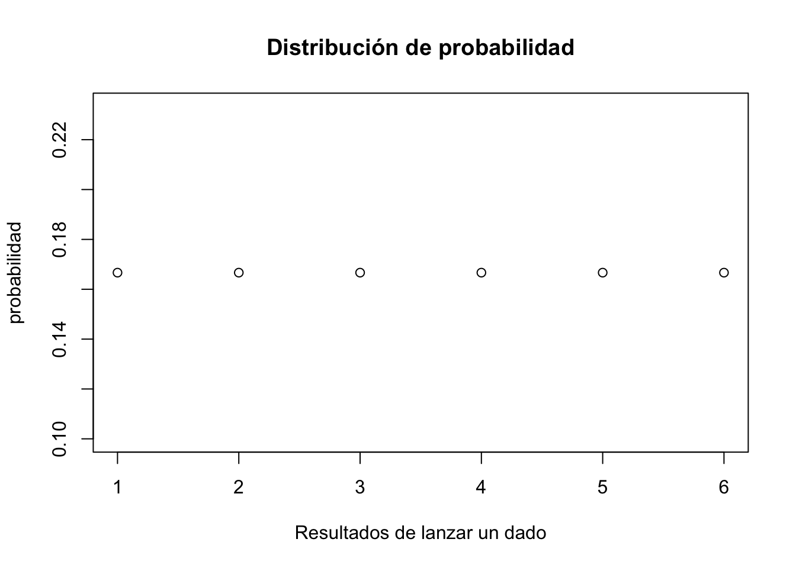

media<-function(x){
I<-sum(x) # La sumatoria de los elementos
n<-length(x) ## El tamaño muestral
I/n
}3: Distribución de datos

Las distribuciones son fundamentales en diversos ámbitos, desde la estadística hasta la informática, debido a su capacidad para modelar y analizar grandes conjuntos de datos de manera eficiente. Al agrupar datos en categorías o rangos específicos, las distribuciones nos permiten identificar patrones, tendencias y anomalías. Esto resulta invaluable para tomar decisiones informadas, optimizar procesos y realizar predicciones.
Resumen
Para esta parte se muestra la parte de funciones en R, revisamos algunos aspectos adicionales de la distribución de una variable. Luego se toma como referencia la importación desde un archivo distinto a las tradicionales bases de Excel tomando una base de archivo tipo dta (STATA). Adicionalmente, se hace uso del grupo de variables categóricas o como la gran mayoría de programas denomina como factores. Finalmente hacemos algunos ejemplos que tienen que ver con inferencia estadística y el uso de tablas de distribución directamente en el lenguaje de programación.
Funciones en R
Las funciones nos permiten de alguna forma escribir, armar y hasta crear indicadores que el software no trae consigo instalado. Es el caso si deseamos tener el promedio de una variable aleatoria.
La estructura de una funtion (función) en R tiene por lo menos los siguientes elementos:
mi_función<- function(NOMBRE_VARIABLE){
Operación que se desea hacer en NOMBRE_VARIABLE y despues calcular el valor (VALUE)
VALUE
}Miremos un caso de esto. Digamos que queremos crear \(E(x)\) en R. Para esto entonces tomamos:
Al crearla y mirar su uso, vamos a encontrar:
x<-c(15,18,19,21,23)
media(x)[1] 19.2Y notamos que tenemos el resultado de una función que me permite hallar el promedio o valor en este caso de 19.2 para cierta variable.
De las funciones de probabilidad
Recuerde el lanzamiento de un dado
En R lanzar un dado puede darse de la siguiente manera:
set.seed(12345)
# La opción de 1 es para una solo lanzamiento (resultado)
sample(1:6, 1) [1] 6Se obtiene uno de los resultados para eso. Si por algún motivo deseamos tener su distribución, entonces tenemos:
# Creamos los valores de repetición una seis veces
probabilidad <- rep(1/6, 6)
# Gráficamos
plot(probabilidad,
xlab = "Resultados de lanzar un dado",
main = "Distribución de probabilidad") 
También podemos tener una probabilidad acumulada de estos eventos a partir de:
# Tomamos lo anterior
probabilidad_acum <- cumsum(probabilidad)
# Luego gráficamos nuevamente
plot(probabilidad_acum,
xlab = "Resultados",
main = "Distribución acumulada de probabilidad") Podemos hacerlo de tipo “Bernoulli” como cuando lanzamos una moneda:
sample(c("Cara", "Sello"), 1) [1] "Cara"La distribución nos permite conocer el comportamiento final de un evento, sobre todo si se repite. Asuma ahora que queremos saber el valor esperado o la media (promedio de la variable) \(E(X)\) de haber lanzado unas cien mil veces un dado.
# Promedio del lanzamiento de un dado
mean(1:6)[1] 3.5# Semilla de replicación
set.seed(123)
# Posibles tres primeros valores
sample(1:6, 3, replace = T)[1] 3 6 3# Promedio con 100 mil lanzamientos
mean(sample(1:6, 100000, replace = T))[1] 3.49492Integrabilidad y Función de probabilidad de una variable continua
-Recuerde en clases- que si queríamos conocer la función de probabilidad de una variable continua como (x) entonces es posible plantear mediante una integral y calcular el área bajo la curva de una función continua:
\[\int_{a}^{b} f (x) dx= P( a \leq x\leq b )\] Todo lo anterior es con la posibilidad de conocer cual es la probabilidad de que \((x)\) se encuentre en cierto rango de valores entre \(a\) y \(b\) siendo estos los límites inferiores y superiores de la integral. En R podemos implementarlo de la siguiente manera:
integrate(function(x) x, lower = 0, upper = 1)
# Lower es el limite inferior y upper el superiorProcedemos hallar la probabilidad que \(f(x)=\frac{1}{x^2}\) se encuentre entre el límite inferior de \(a=1\) y el límite superior de \(b=\infty^+\).
# Hallar el área bajo la curva
area <- integrate(function(x) 1/x^2, lower = 1, upper = Inf)$value
area [1] 1Ejemplo de la clase
Para el ejemplo de la clase, podemos tomar entonces:
\[f(x)=\begin{cases} \frac{1}{40000}& si & 10000 \leq x \leq 50000 \\ 0& si & ocurre\; lo\; contrario\end{cases}\]
Calcular:
- La probabilidad que los empleados consuman en este mes exactamente 30000 litros de gasolina, \(p(x=30000)\):
Primero creamos una función pequeña (esta es la que nos permite) trabajar la integral con la opción de Vectorize.
# Como se trata de una constante hay que vectorizar
fp <- function(x){1/40000}
Vfp <- Vectorize(fp)
e1 <- integrate(Vfp, lower = 30000, upper = 30000)$value
e1[1] 0- De que consuman por lo menos 30000 litros, \(P (x \geq 30000)\):
e2 <- 1 - integrate(Vfp, lower = 10000, upper = 30000)$value
e2[1] 0.5- La probabilidad que consuman entre 20000 y 30000 litros de gasolina, \(P(20000 \leq x \leq 30000)\):
e3 <- integrate(Vfp, lower = 20000, upper = 30000)$value
e3[1] 0.25Encontramos cada uno de los valores en R sin requerir de alguna calculadora en particular.
Otra manera pero con distribución Uniforme
Cada distribución de probabilidad que maneja R tiene cuatro funciones básicas cuyos nombres consisten en un prefijo seguido del nombre de la distribución. Como ejemplo, miremos la distribución normal. El nombre de las cuatro funciones asociadas a la distribución normal es norm. Los cuatro prefijos son:
- d de “densidad” - función de probabilidad / función de densidad de probabilidad
- p de “probabilidad” - función de distribución acumulativa
- q de “cuantil” - función de cuantil (función de distribución acumulativa inversa)
- r de “random” - generador de números aleatorios
Así, para la distribución normal tenemos las funciones de R como: dnorm(), pnorm(), qnorm() y rnorm().
La función de R conocida como punif permite extraer los valores de la probabilidad de una distribución uniforme. Recuerde que estas pueden ser:
set.seed(123)
runif(n = 30, min = 150, max = 370) [1] 213.2671 323.4271 239.9749 344.2638 356.9028 160.0224 266.1832 346.3322
[9] 271.3157 250.4552 360.5033 249.7335 299.0655 275.9793 172.6434 347.9615
[17] 204.1393 159.2531 222.1426 359.9908 345.6986 302.4167 290.9115 368.7394
[25] 294.2553 305.8767 269.6945 280.7112 213.6151 182.3650Y para graficar con tres (3) escenarios posibles se puede tener:
# Una fila, tres columnas como opción de gráfico
par(mfrow = c(1, 3))
x <- seq(-0.5, 1.5, 0.01)
set.seed(123)
# n = 10
hist(runif(10), main = "n = 100", xlim = c(-0.2, 1.25),
xlab = "", prob = TRUE)
lines(x, dunif(x), col = "red", lwd = 2)
# n = 1000
hist(runif(1000), main = "n = 10000", xlim = c(-0.2, 1.25),
xlab = "", prob = TRUE)
lines(x, dunif(x), col = "red", lwd = 2)
# n = 100000
hist(runif(100000), main = "n = 1000000", xlim = c(-0.2, 1.25),
xlab = "", prob = TRUE)
lines(x, dunif(x), col = "red", lwd = 2)# Volvemos a una fila y una columna para la opción default de R
par(mfrow = c(1, 1))De vuelta al ejercicio de clase, podemos usar entonces la opción de punif para obtener resultados sin hacer uso de las funciones de interacción:
- Caso 1: Exactamente 30 mil litros de gasolina
# Lower.tail TRUE es el lado de la probabilidad (x<=)
h=punif(30000, min=10000, max=50000, lower.tail=T)
j=punif(30000, min=10000, max=50000, lower.tail=F)
h-j[1] 0- Caso 2: Por lo menos 30000 litros de gasolina
punif(30000, min=10000, max=50000, lower.tail=F)[1] 0.5- Caso 3: Entre 20000 y 30000
# Se usa de la siguiente manera
# Lower.tail FALSE es el lado de la probabilidad (>)
h=punif(30000, min=10000, max=50000, lower.tail=F)
l=punif(20000, min=10000, max=50000, lower.tail=T)
h-l[1] 0.25Replicando los resultados anteriormente obtenidos. En resumen hay distintas maneras de llegar a obtener un Resultado de distintas formas posibles.
Importación con otros formatos de base de datos
Para esta parte se hará uso de una data brindada por el conjunto de dataset del libro de Wooldridge Introducción a la econometría. Las etiquetas se encuentran en ingles, pero nos dice lo siguiente:
A continuación procedemos a importar con el paquete haven:
library(haven)
#Base de datos que va a usarse
datos_asuntos <- read_dta("datos asuntos.dta")
#Vista Preliminar
View(datos_asuntos)En el análisis de datos en frecuencias y porcentajes, es bueno tener presente los comandos de table, prop.table, serán de ayuda para decirnos la manera en como están tabulados y distribuidos los datos que estamos analizando.
# Generamos "Factores" a las etiquetas de una variable
haskids <- factor(datos_asuntos$kids,labels=c("no","si"))
mlab <- c("Muy Infeliz","Infeliz","Regular","Feliz", "Muy feliz")
marriage <- factor(datos_asuntos$ratemarr, labels=mlab)
# Tabla de frecuencias de la variable tener hijos:
table(haskids)haskids
no si
171 430 Que informa cuantos de los encuestados tienen hijos, para este caso son de 430 que los tienen.
El mismo resultado pero ahora con porcentajes (decimales):
prop.table(table(haskids))haskids
no si
0.2845258 0.7154742 La salida la estipula el investigador, si deseea en número o en defecto con decimales y porcentaje.
Distribución de los casados como es su sentimiento:
Veamos un nuevo ejemplo, pero usando la variable de casado y que tan feliz o infeliz se siente despues de haberse casado.
prop.table(table(marriage))marriage
Muy Infeliz Infeliz Regular Feliz Muy feliz
0.0266223 0.1098170 0.1547421 0.3227953 0.3860233 Si observa, un 38% de los encuestados se encuentra muy felizmente casado(a) con su pareja y en pocos porcentajes se encuentran descontentos.
Tabla de contingencia: Cuenta cuantas parejas de casados tienen hijos}
Es posible hacer cruces de variables para hacer análisis un poco mas sofisticados y ver que incidencia existe uno con el otro. Haremos una visualización con totales por filas y columnas y ver si los hijos tienen alguna incidencia en el sentimiento de felicidad en los casados.
(countstab <- table(marriage,haskids)) haskids
marriage no si
Muy Infeliz 3 13
Infeliz 8 58
Regular 24 69
Feliz 40 154
Muy feliz 96 136# Entre casados "marriage" (p.e. Análisis por filas):
prop.table(countstab, margin=1) haskids
marriage no si
Muy Infeliz 0.1875000 0.8125000
Infeliz 0.1212121 0.8787879
Regular 0.2580645 0.7419355
Feliz 0.2061856 0.7938144
Muy feliz 0.4137931 0.5862069# Entre casados que poseen "haskids" (p.e. Análisis por Columnas):
prop.table(countstab, margin=2) haskids
marriage no si
Muy Infeliz 0.01754386 0.03023256
Infeliz 0.04678363 0.13488372
Regular 0.14035088 0.16046512
Feliz 0.23391813 0.35813953
Muy feliz 0.56140351 0.31627907Siempre es importante la opción de p.e margin=1 ya que nos muestra resultados por filas y la parte de margin=2 u opciones nos mostrará la parte para hacer análisis por columnas dentro de una categoría. Con esto podemos mirar que aquellos que tienen hijos posiblemente tienen casos mas complejos en el hogar y que puede llevar a separación.
Subconjuntos con filtros
Muchas veces se debe filtrar la base de datos original y convertirla en una base mas pequeña. Para esto, se requiere una condición o característica esencial de interés del investigador.
# Base
datos_asuntos# A tibble: 601 × 19
id male age yrsmarr kids relig educ occup ratemarr naffairs affair
<dbl> <dbl> <dbl> <dbl> <dbl> <dbl> <dbl> <dbl> <dbl> <dbl> <dbl>
1 4 1 37 10 0 3 18 7 4 0 0
2 5 0 27 4 0 4 14 6 4 0 0
3 6 1 27 1.5 0 3 18 4 4 3 1
4 11 0 32 15 1 1 12 1 4 0 0
5 12 0 27 4 1 3 17 1 5 3 1
6 16 1 57 15 1 5 18 6 5 0 0
7 23 1 22 0.75 0 2 17 6 3 0 0
8 29 0 32 1.5 0 2 17 5 5 0 0
9 43 1 37 15 1 5 18 6 2 7 1
10 44 0 22 0.75 0 2 12 1 3 0 0
# ℹ 591 more rows
# ℹ 8 more variables: vryhap <dbl>, hapavg <dbl>, avgmarr <dbl>, unhap <dbl>,
# vryrel <dbl>, smerel <dbl>, slghtrel <dbl>, notrel <dbl># Se hace uso del comando "Subset" para seleccionar un subconjunto de una base
# para aquellas observaciones cuya educación en años es mayor o igual a 10.
subset(datos_asuntos, educ>=10)# A tibble: 594 × 19
id male age yrsmarr kids relig educ occup ratemarr naffairs affair
<dbl> <dbl> <dbl> <dbl> <dbl> <dbl> <dbl> <dbl> <dbl> <dbl> <dbl>
1 4 1 37 10 0 3 18 7 4 0 0
2 5 0 27 4 0 4 14 6 4 0 0
3 6 1 27 1.5 0 3 18 4 4 3 1
4 11 0 32 15 1 1 12 1 4 0 0
5 12 0 27 4 1 3 17 1 5 3 1
6 16 1 57 15 1 5 18 6 5 0 0
7 23 1 22 0.75 0 2 17 6 3 0 0
8 29 0 32 1.5 0 2 17 5 5 0 0
9 43 1 37 15 1 5 18 6 2 7 1
10 44 0 22 0.75 0 2 12 1 3 0 0
# ℹ 584 more rows
# ℹ 8 more variables: vryhap <dbl>, hapavg <dbl>, avgmarr <dbl>, unhap <dbl>,
# vryrel <dbl>, smerel <dbl>, slghtrel <dbl>, notrel <dbl>#Se puede adicionar a una nueva base con un nombre nuevo
mibase<- subset(datos_asuntos, educ>=10)
#Mirar en formato tradicional
View(mibase)
#Un subset con variable cualitativa (tipo filtro) cuando la pareja
#'si' tiene hijos
subset(datos_asuntos, kids==1)# A tibble: 430 × 19
id male age yrsmarr kids relig educ occup ratemarr naffairs affair
<dbl> <dbl> <dbl> <dbl> <dbl> <dbl> <dbl> <dbl> <dbl> <dbl> <dbl>
1 11 0 32 15 1 1 12 1 4 0 0
2 12 0 27 4 1 3 17 1 5 3 1
3 16 1 57 15 1 5 18 6 5 0 0
4 43 1 37 15 1 5 18 6 2 7 1
5 45 1 57 15 1 2 14 4 4 0 0
6 47 0 32 15 1 4 16 1 2 0 0
7 50 1 37 15 1 2 20 7 2 0 0
8 53 0 32 10 1 3 17 5 2 12 1
9 55 1 27 4 1 4 18 6 4 0 0
10 64 1 47 15 1 5 17 6 4 0 0
# ℹ 420 more rows
# ℹ 8 more variables: vryhap <dbl>, hapavg <dbl>, avgmarr <dbl>, unhap <dbl>,
# vryrel <dbl>, smerel <dbl>, slghtrel <dbl>, notrel <dbl>Correlación
La correlación es un índice estadístico bastante utilizado para establecer las correlaciones entre dos variables \(X,Y\). Su importancia radica en la interpretación de la fuerza y magnitud que esta nos brinda en su intervalo \(\left[ -1\leq r \leq 1 \right]\). Entre mas cercano a los extremos mucho mejor y menor dispersión en los datos vamos a encontrar.
#Un gráfico de correlación
plot(x = datos_asuntos$yrsmarr, y = datos_asuntos$age,
ylab = "Edad de la persona",
xlab = "Años de casados",
main = "Correlación entre edad y años de matrimonio" )Lo mejor siempre será comparar dos variables cuantitativas, para este caso, el gráfico nos muestra como distintos niveles de edad poseen en común un mismo número de años casados. Es de esperar que como hipótesis se tuviera que en la medida que hay mayor nivel de edad mayor fuera el número de años de matrimonio que tuviera la persona.
Hallar el valor de la correlación entre ambas variables, se puede hacer con el comando cor de la siguiente forma:
## Para correlación entre variables ##
attach(datos_asuntos)
# Note que al usar arrach no es necesario el signo peso
cor(yrsmarr,educ) [1] 0.04000272# Formulas covarianza y varianza
cov(age,educ) # Solo interesa el signo[1] 3.003747var(age)[1] 86.28109También, hay paquetes como Hmisc que contiene un grupo de funciones estadísticas que permiten obtener este tipo de correlaciones. Veamos un ejemplo:
# Definimos la muestra
datos= data.frame(notas_c<- c(2.11,4.15,3.18,3.45,4.7),
notas_e<- c(2.40,4.30,3.30,3.6,4.9))Que son las notas que obtuvo una persona en Cálculo y en Economía Colombiana. Hacemos uso entonces del paquete Hmisc (debimos haberlo instalado antes)
library(Hmisc)
rcorr(datos$notas_c, datos$notas_e, type= "pearson") x y
x 1 1
y 1 1
n= 5
P
x y
x 0
y 0 Y encontramos entonces que la correlación es de cero (0). Las variables no tienen relación alguna entre ellas. Que por el contrario. Son bastantes independientes.
Si por otro lado queremos la correlación de tipo “Spearman”, entonces simplemente cambiamos la parte correspondiente a type y tenemos:
rcorr(datos$notas_c, datos$notas_e, type= "spearman") x y
x 1 1
y 1 1
n= 5
P
x y
x 0
y 0 Brindando el mismo resultado de cero (0), que viene a ser mas o menos similar al anterior. Recuerde que en econometría se hace mas uso del tipo de correlación Pearson.
Correlación entre una variable categorica y una continua
En algunas ocasiones podemos mirar, si una característica incide sobre la correlación de alguna variable. Digamos que queremos mirar si haber tomado café/tinto incide en algo o tiene relación en el rendimiento de una persona en un examen de calificación. Tome en consideración lo siguiente:
tinto<-c(1,1,0,0,0,1,1,1,1,1)
notas_Econ<-c(4.3,3.7,2.3,2.2,2.1,4.41,4.46,3.72,3.33,3.50)
# Calculamos la correlación Bi-serial
cor.test(tinto, notas_Econ)
Pearson's product-moment correlation
data: tinto and notas_Econ
t = 6.1518, df = 8, p-value = 0.0002735
alternative hypothesis: true correlation is not equal to 0
95 percent confidence interval:
0.6518232 0.9784589
sample estimates:
cor
0.9085684 Lo que nos arroja un resultado de 0.90 de correlación que interpretamos como una correlación alta cuando tomamos café y enfrentamos una prueba. Cuando esa persona tomó café tuvo mejores resultados que cuando no lo hizo -Recuerde que son correlaciones y implica causalidad-
Datos de la tabla de la Normal estándar y gráficos generales
En estadística se aprendió a realizar planteamientos que hacen uso de las distintas funciones de distribución. Una de ellas, o la mas importante de todas de acuerdo a su aplicación es la que suele representarse como \(N \sim (\mu, \sigma^{2})\) y con ella hacer uso de su formula mas simple que viene a ser: \[(d_{i})=\frac{X-\mu}{\sigma}\] Donde \(\mu\) hace referencia a la media y \(\sigma^{2}\) a la varianza. La variable \(X\) simplemente viene a ser la variable en cuestión. Revise el ejemplo del curso, cuando el profesor le pedía hallar la probabilidad de que \(Y\leq 2\) cuando \(N \sim (1,4)\). El comando pnorm hace referencia al parámetro \(\Phi\).
# Para conocer el valor de la probabilidad
pnorm(0.5)[1] 0.6914625# También se puede usar directamente cuando se tiene
# media (1) y desviación estándar (2)
pnorm(2, mean=1,sd=2)[1] 0.6914625# Ahora para realizar una gráfica general (sirve para pruebas de hipótesis)
pnorm(1.96) - pnorm(-1.96) #Área de probabilidad entre dos valores[1] 0.9500042x.valores = seq(-5,5, length = 1000)
y.valores = dnorm(x.valores)
plot(x.valores, y.valores, type="l", lty=1, xlab="Valor Z", ylab="Probabilidad", main="Distribución Normal")
abline(v = 1.96)
abline(v = -1.96)
Otro ejemplo, es el siguiente para una función normal de una variable cuando \(Y\leq 2\) con media de 0 y varianza de 1.
x<-seq(-5,5,0.1) #Creamos los datos
hist <- dnorm(x, mean=0, sd=1) #Guardamos el histograma
plot(x, hist, type="l", xlab="Desviación estándar", ylab="Densidad de probabilidad",main="Grafico de Densidad",
lty = 1, lwd = 2, yaxs="i") # yaxs="i" significa el límite del dato en el eje
polygon(c(x[x <= 2.0], 2), c(dnorm(x[x <= 2]), 0), col="lightblue")
text(0, .1,"0.977")Si nuestro interés solo es mirar como se distribuye de forma normal un conjunto de datos que \(X\sim(\mu,\sigma^{2})\). También esta el comando de qnorm que permite desde el valor de la probabilidad de \(X\) hallar el valor correspondiente a ésta.
# Un ejemplo al 97% con media de cero y varianza de 1.
qnorm(0.978, mean = 0,sd=1) [1] 2.014091# Siempre usar desde 0.01 hasta 0.99Lo que nos da como resultado 2.014 que es el valor (X) (inicial) o número que representa la probabilidad del 97% cuando la media es de 0 y la desviación es 1, como es el caso de la gráfica anterior con el valor Y de los menores o iguales a 2.
Zonas de rechazo de hipótesis
Muchas veces para los contrastes estadísticos tendremos que usar el \((\alpha)\) o error de confianza para rechazar o no hipótesis nulas \((H_{0})\). El código para obtenerlo en R siempre tiene sus cosas, lo recomendable es que escriba el código totalmente y luego si ejecute seleccionando todo con la opción de ctrl+enter:
x<-seq(-5,5,0.1) #Creamos los datos (estos son aleatorios)
hist <- dnorm(x, mean=0, sd=1) #Guardamos el histograma
#Toda esta parte a continuación debe correrla de un solo ``tajo'':
plot(x, hist, type="l", xlab="Desviación estándar", ylab="Densidad de probabilidad",main="Grafico de Densidad",
lty = 1, lwd = 2, yaxs="i") # yaxs="i" significa el límite del dato en el eje
polygon(c(x[x >= 1.96], 2), c(dnorm(x[x >= 1.96]), 0), col="gray")
polygon(c(x[x <=-1.96], -2), c(dnorm(x[x <= -1.96]), 0), col="gray")
text(0, .1,"0.95")
text(-3, .05,expression(alpha==0.025), col = "red")
text(3, .05,expression(alpha==0.025), col = "red")El análisis de \((\alpha)\) hace referencia a los niveles específicos de los niveles de confianza de una prueba cualquiera, por ejemplo: recuerde cuando se tienen dos eventos, uno es verdadero con probabilidad (P) y otro falso con probabilidad (1-P), ambos son excluyentes y le piden que demuestre el resultado que se de uno de ellos. Para el caso de las Pruebas de hipótesis es lo mismo, una parte que es cierta o verdadera y la otra que es falsa. En econometría y estadística siempre se usa de tal forma que \((1-\alpha)\) o (1-P) es la parte1 de \(95\%\) - siendo el nivel estándar de las pruebas científicas - y su contraste es \(\alpha\) o es 5%. En otros casos - mas exigentes-, puede llegar a ser \((1-\alpha)=99\%\) y por ende \(\alpha\) será igual a \(1\%\).
En el análisis de datos, al igual que en la econometría y en muchas partes, se debe siempre testear o probar los resultados en el universo estadístico que brindan las distribuciones.
Tomemos por ejemplo una distribución -recuerde que necesitamos de estas porque se convierten en el mapa a aproximar cuando realizamos estimaciones muestrales-.
# Generar datos
set.seed(5672) #Una semilla de replicación para que a todos nos salga lo mismo
rnorm(100) [1] -0.18400862 -1.05931512 1.50759363 -0.60075771 0.79107108 -0.44334303
[7] -0.35042110 -1.25450334 0.63799236 0.64631285 -0.14895577 -0.87483080
[13] -0.15824114 0.56376500 -1.34740602 0.91685198 2.26423302 -0.70910236
[19] -0.82977862 -0.89983410 1.37276199 0.85239574 0.49860312 -1.17692668
[25] 0.75194573 -0.08792311 0.65682396 1.52469404 0.71705327 -1.37207571
[31] -0.97292872 1.78510555 -1.31422047 3.06131557 0.19678032 0.78088015
[37] 0.75275186 1.61846625 -1.75956334 -0.05631070 -1.14023988 0.66007969
[43] -0.71299941 1.23366144 -0.25807622 -1.43845021 -1.36962926 -0.40745676
[49] 0.49351508 -0.61838224 1.10034077 2.33600094 1.30356426 -0.88262713
[55] 0.92618206 1.40416805 -1.20909561 0.25622506 -0.46374507 1.51006044
[61] -0.58142586 -0.98291735 1.99639339 -0.89036509 0.04713117 -0.16852734
[67] -0.62740703 -1.25127174 -2.00665347 -0.11183343 0.66415330 -1.29488126
[73] 0.68489035 0.99119783 0.69521727 0.09763780 1.74954562 -1.82436693
[79] -1.55433115 -0.02273659 -1.11844353 2.42255285 -1.73167894 -1.53284360
[85] -0.24999095 -2.02380378 0.29885479 1.54184598 0.13739446 -0.67621809
[91] -0.55691948 -0.45189730 -1.01214765 0.80377864 -0.17124248 0.41844004
[97] 0.70987117 0.29105856 -1.09294074 0.14208391#Asignar a un vector
y<-rnorm(100)
# Figura de histograma
hist(y, main="Un histograma de la Dist. normal", ylab = "Frecuencia de datos")La forma en como se distribuyen los datos nos podrán “mapear” como lo hace un universo de observaciones que quizás no logremos tener (por el alto costo de conseguir esa información o porque no exista suficiente espacio o memoria en nuestro ordenador), sin embargo, a partir de eso podremos inferir lo que ocurre generalmente con las cosas.
Hay datos que se distribuyen normal porque su naturaleza es independiente y aleatoria, es por esto que se comportan de forma “Normal” o se distribuyen así. Por otro lado, podemos encontrar datos que se distribuyen de otra manera, es el caso de la distribución discreta de la binomial, como se muestra a continuación:
# Una gráfica para la distribución binomial
# Valores de x: Números del o al 10 con una secuencia
x <- seq(0,10)
# Función para todos esos valores
fx <- dbinom(x, 10, 0.2)
# Tabla de (matriz) de valores
cbind(x, fx) x fx
[1,] 0 0.1073741824
[2,] 1 0.2684354560
[3,] 2 0.3019898880
[4,] 3 0.2013265920
[5,] 4 0.0880803840
[6,] 5 0.0264241152
[7,] 6 0.0055050240
[8,] 7 0.0007864320
[9,] 8 0.0000737280
[10,] 9 0.0000040960
[11,] 10 0.0000001024# Gráfico con distintas formas de las lineas
plot(x, fx, type="h")plot(x, fx, type = "c")plot(x, fx, type = "l")Saber de las distribuciones nos permite resolver problemas como los que se presentan a continuación: Sea \(X\) un conjunto de balotas de color verde que se pueden extraer de una bolsa que regularmente solo contiene un 15% de ese color. Con los siguientes parámetros: n=20 total de pelotas dentro de la bolsa y \(p=15\%=0.15\). Si queremos conocer la probabilidad de sacar 3 pelotas de color verde , debemos entonces hacer uso de una distribución. Todos sabemos que la probabilidad va en \(x \in \{0,1,2,\dots,20\}\), la propuesta de desarrollo es:
\[f(x)=P(X=x) = \binom{n}{x} \cdot P^{x} \cdot (1-P)^{n-x}= \binom{20}{x} \cdot 0.15 \cdot (0.85)^{20-x}\] La pregunta va en dirección de la probabilidad de sacar 3 balotas de color verde , lo que es:
\[f(x)= \binom{20}{3} \cdot 0.15 \cdot (0.85)^{20-3}\] En el Software R es muy fácil aplicar el comando dbinom(x,n,p) y tendremos:
dbinom(3,20,0.15)[1] 0.2428289Dándonos como resultado una probabilidad de 24.28% de sacar tres (3) pelotas de color verde en dicho experimento.
De la función de distribución acumulada (FDA)
La FDA es aquella que representa la probabilidad de que X tome al menos el valor de (x). Tenga presente lo siguiente:
\[F(x)= P(X \leq x)\] X puede tomar distintos valores muestrales. Suponga que X es el salario de una persona, la parte (x) puede ser 50000 o 100000 y así cualquier otro valor. Si queremos mirar por ejemplo, cual es la probabilidad de que X este entre a y b?, ya hacemos uso por ejemplo de \(P(a\leq X \leq b)\).
Mire que si sabemos que \(X \sim (10, 24)\). podemos entonces preguntarnos: ¿Cuál es la probabilidad que X este (o tome valores) entre 6 y 12. Una respuesta para eso es
\[\mu_{x}= \frac{6-10}{4.9}=\Phi \left( \frac{-4}{5} \right)\] De forma similar es para el otro valor
\[\mu_{x}= \frac{12-10}{4.9}=\Phi \left(\frac{2}{5} \right)\] En R es sencillo entonces tener:
# De forma normal
pnorm(2/5)-pnorm(-4/5)[1] 0.4435663# Luego de forma directa
pnorm(12,10,5)-pnorm(6,10,5)[1] 0.4435663Y obtenemos el mismo resultado de acuerdo a lo que estemos hallando. La probabilidad en este casi es del 44.35%.
Grafica de la FDA
Tanto los sucesos de una distribución binomial o normal siguen una distribución de la siguiente manera:
set.seed(123)
x<-seq(-2,15)
Fx<-pbinom(x, 15, 0.2)
par(mfrow = c(1, 2))
plot(x, Fx, type="s")
curve(pnorm(x), -5,5)El universo del comportamiento de las variables, nos permiten hacer inferencia de todo tipo.
Footnotes
Este criterio siempre va a depender del investigador y de los recursos con que cuenta.↩︎